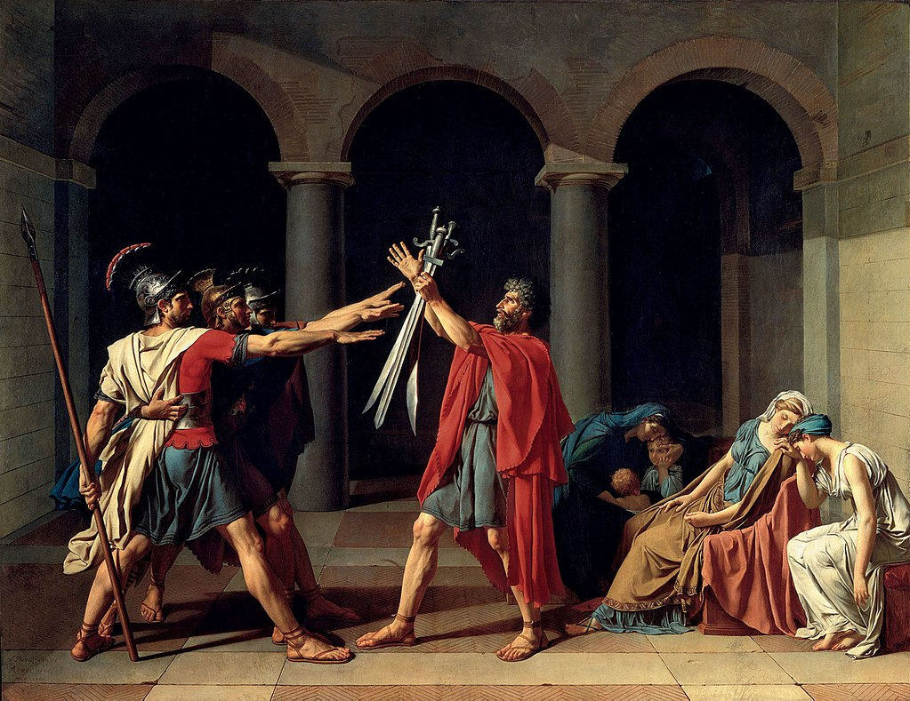

<head>
<meta charset="UTF-8" />
<meta name="keywords" content="drawing, painting" />
<meta name="description" content="drawings by Sunjy" />
<title>Sunjy</title>
<link rel="shortcut icon" type="image/x-icon" href="../../mImages/mCommon/favicon.ico" media="screen" />
<link rel="stylesheet" type="text/css" href="../../mCsses/mCommon/mCssA.css" />
<link rel="stylesheet" type="text/css" href="../../mCsses/mCommon/mCssB.css" />
<link rel="stylesheet" type="text/css" href="../../mCsses/mCommon/mCssC.css" />
<link rel="stylesheet" type="text/css" href="../../mCsses/mCommon/mCssD.css" />
<link rel="stylesheet" type="text/css" href="../../mCsses/mContent/mCssA.css" />
<link rel="stylesheet" type="text/css" href="../../mCsses/mContent/mCssB.css" />
<link rel="stylesheet" type="text/css" href="../../mCsses/mContent/mCssC.css" />
<link rel="stylesheet" type="text/css" href="../../mCsses/mContent/mCssD.css" />
</head>
<script type="text/javascript" src="../../mScripts/mContent/mContentAA.js" /></script>
<script type="text/javascript" src="../../mScripts/mContent/mContentAB.js" /></script>
<script type="text/javascript" src="../../mScripts/mContent/mContentAC.js" /></script>
<script type="text/javascript" src="../../mScripts/mContent/mContentAD.js" /></script>
<script type="text/javascript"></script> 
<script type="text/javascript">
document.write('<div class="mImgAbsolute"></div>');
/*
document.write('<p class="mFontSizeBColor" />From a white paper...</p>');
document.write('<table class="center"><tr><td>');
document.write('');
document.write('</td></tr></table>');
*/
</script>


<script type="text/javascript">
document.write('<p class="mFontSizeBColor" />Oath of the Horatii</p>');
document.write('<p class="mFontSizeSColor" />By Jacques-Louis David. “Oath of the Horatii” depicts a scene from a Roman legend about a seventh-century BC dispute between two warring cities, Rome and Alba Longa.<br><br>It is one of the best-known history paintings in the Neoclassical style. Its theme stresses the importance of patriotism and self-sacrifice for one’s country and family.<br><br>The painting depicts the Roman Horatius family, from which three brothers had been chosen for a ritual duel. The duel was against three brothers of the Curiatii, a family from Alba Longa, to settle the disputes between the two cities.<br><br>The three brothers, all of whom agreed to sacrifice their lives for the good of Rome, are shown saluting their father, who holds their swords out for them.<br><br>In the bottom right corner are the women of the family who are also sacrificing for the state. One of the women Camilla, a sister to the Horatii brothers, is betrothed to one of the Curiatii fighters.<br><br>Another woman is a sister of the Curiatii, married to one of the Horatii. They weep in the understanding that, whichever side wins, they will lose someone they love.<br><br>As the revolution in France loomed, paintings urging loyalty to the state were popular, and “The Oath of the Horatii” became one of the defining images of the time.</p>');
document.write('<table class="center" /><tr><td>');
document.write('<br>It is one of the best-known history paintings in the Neoclassical style. Its theme stresses the importance of patriotism and self-sacrifice for one’s country and family.<br><br>The painting depicts the Roman Horatius family, from which three brothers had been chosen for a ritual duel. The duel was against three brothers of the Curiatii, a family from Alba Longa, to settle the disputes between the two cities.<br><br>The three brothers, all of whom agreed to sacrifice their lives for the good of Rome, are shown saluting their father, who holds their swords out for them.<br><br>In the bottom right corner are the women of the family who are also sacrificing for the state. One of the women Camilla, a sister to the Horatii brothers, is betrothed to one of the Curiatii fighters.<br><br>Another woman is a sister of the Curiatii, married to one of the Horatii. They weep in the understanding that, whichever side wins, they will lose someone they love.<br><br>As the revolution in France loomed, paintings urging loyalty to the state were popular, and “The Oath of the Horatii” became one of the defining images of the time." />');
document.write('</td></tr></table>');
</script>


